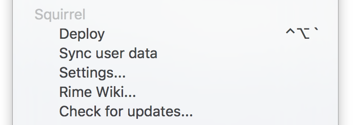
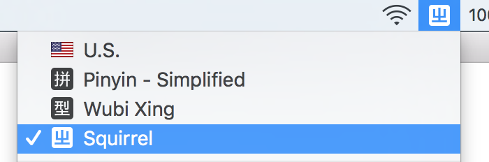
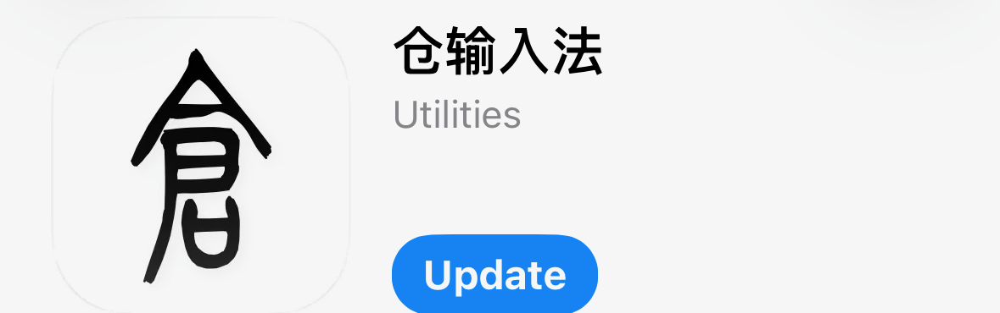
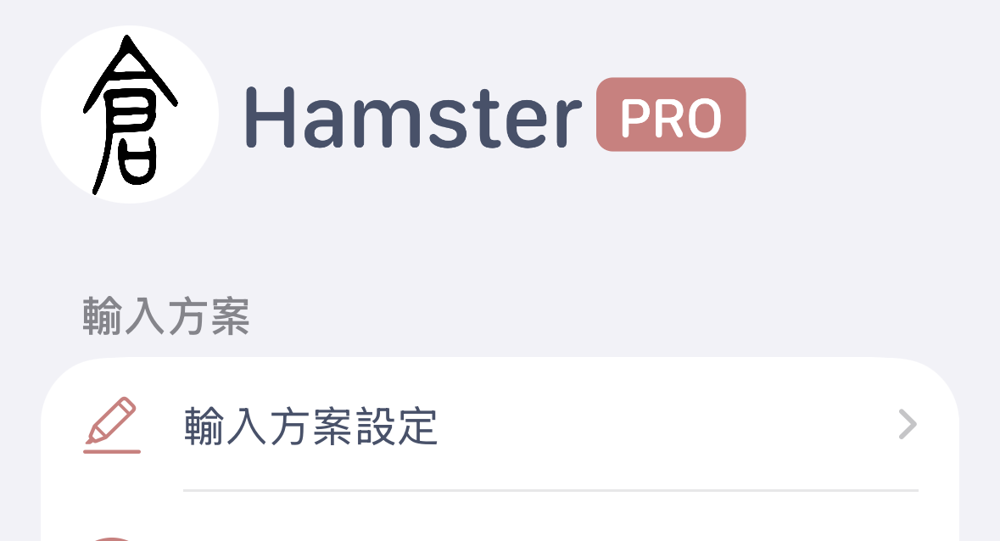
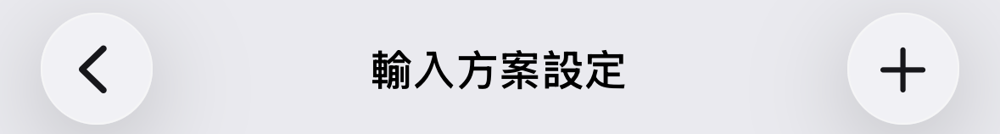
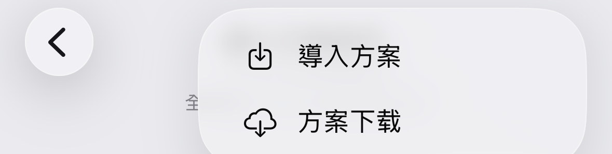
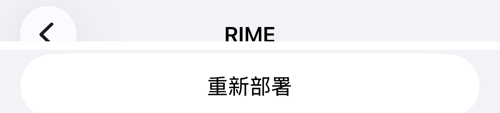
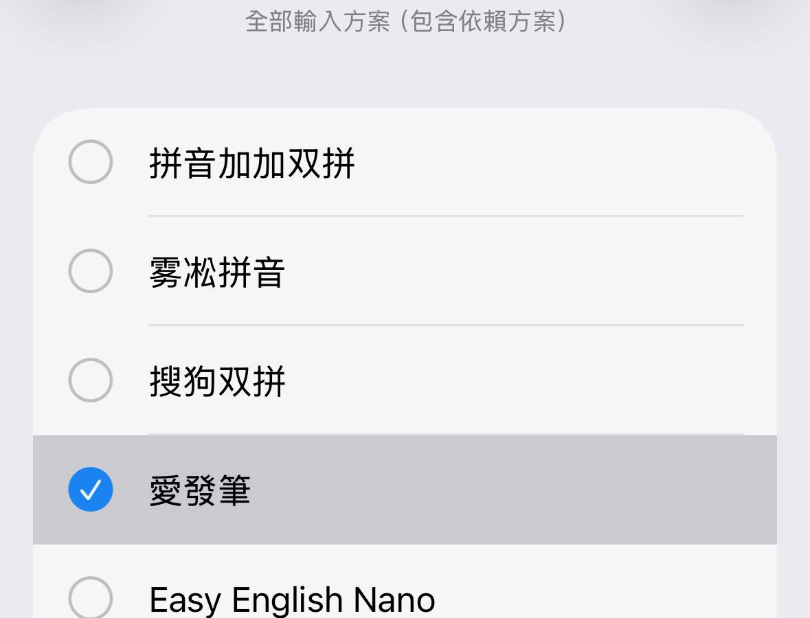
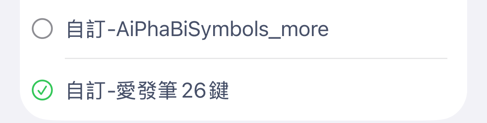

愛發筆輸入法
安裝包
三個平台，分開打包：macOS 用鼠鬚管（Squirrel），iOS 用「仓輸入法」（仓／Hamster），Windows 還在準備中。安裝包裡的碼表跟這個網站、跟這個 repo 目前的版本一致，不是另外維護的舊版本；下面每一步都寫給不熟電腦操作的人，照著點就好。
1. macOS 安裝包
給用鼠鬚管（Squirrel）的 macOS。安裝包只有碼表跟設定檔，鼠鬚管本身要先另外裝好；以下每一步都是滑鼠點一點，不需要懂程式或用終端機。
- 還沒裝鼠鬚管的話：前往Rime 官網，點首頁那顆「鼠鬚管」按鈕下載，雙擊下載回來的安裝檔，跟裝其他 Mac App 一樣一步步按下去。
- 點螢幕左上角的蘋果選單 →「系統設定」→「鍵盤」→「輸入法來源」，按左下角的「＋」，找到並加入「鼠鬚管」——這一步會讓 macOS 自動建立好
~/Library/Rime這個資料夾（裡面已經有一套預設的拼音／注音方案）。 - 下載下面這個安裝包，雙擊解壓縮。
- 打開 Finder，選單列點「前往」→「前往檔案夾⋯」（或按 Shift+Cmd+G），貼上
~/Library/Rime，按 Enter 打開它。 - 把剛剛解壓出來的所有檔案（包括整個
lua資料夾）拖進這個視窗——資料夾裡已經有東西沒關係，直接放進去合併，不用清空，也不會動到裡面原有的其他方案。 -
點選單列的鼠鬚管圖示（一隻松鼠）→〈重新部署〉。

-
打字時按 Ctrl+Space（或點螢幕右上角的輸入法圖示）切到「鼠鬚管」；第一次切過去可能不是愛發筆，再點一次鼠鬚管的松鼠圖示，選單裡選「愛發筆」即可。

畫面示意，截圖出處：kahaani.github.io 的 Rime 安裝教學（介面文字為英文，實際會顯示「鼠鬚管」）。
2. iOS 安裝包（仓／Hamster）
給 iOS 的「仓輸入法」（英文介面顯示 Hamster）。這個安裝包另外附了一份鍵盤佈局：萬用鍵獨立成一顆真的鍵（Q 正下方、A 左邊），符號鍵也換成一頁排滿的數字符號表，不是「仓」原生那種要先選類別的清單。整個過程都在手機上完成，不需要電腦。
- 還沒裝「仓」的話：App Store 搜「仓」（開發者 imfuxiao），確認圖示與名稱是這個再安裝。

- 到 iOS「設定」→「一般」→「鍵盤」→「鍵盤」→「新增鍵盤⋯」，把「仓」加進去——這是每一個第三方鍵盤 App 都需要的系統設定，不是愛發筆特有的步驟。
- 下載下面這個安裝包，存到手機的「檔案」App。
-
打開「仓」，進「輸入方案設定」，按右上角「+」，選「導入方案」，挑剛剛下載的 zip（也可以在「檔案」App 長按這個 zip →〈分享〉→「仓」，效果一樣，會自動解壓到 Rime 目錄）。



-
到「仓」的「RIME」頁籤，按〈重新部署〉——這一步一定要做，且要在「RIME」頁籤裡直接按，不能只靠匯入方案那一步順便觸發，不然鍵盤佈局不會生效。

-
「輸入方案設定」裡確認「愛發筆」已勾選。

-
「鍵盤設定」→「鍵盤佈局」，選「自訂-愛發筆26鍵」。

- 打字時，點鍵盤右下角的地球圖示（🌐）切到「仓」。
這個安裝包還多定義了兩顆鍵盤（供符號鍵切換用），也會各自出現在「鍵盤佈局」清單裡（就是上面截圖裡「自訂-愛發筆26鍵」上方那一項）——這是「仓」的正常行為，不要選它們、也不要刪它們，刪掉會連帶讓整組自訂鍵盤從清單消失。
3. Windows（敬請期待）
小狼毫（Weasel）版的安裝包還在準備中，之後會補上——會跟 macOS／iOS 一樣是「下載、解壓縮、複製進資料夾、重新部署」，不需要另外裝任何開發工具。想早點用的話，其實原理跟 macOS 安裝包一樣：把裡面除了 squirrel.custom.yaml 以外的檔案丟進 %APPDATA%\Rime、重新部署即可；Linux（ibus/fcitx5-rime）也是同一份碼表，丟進 ~/.config/ibus/rime 或 ~/.local/share/fcitx5/rime。Android 目前還沒有對應的鍵盤佈局。